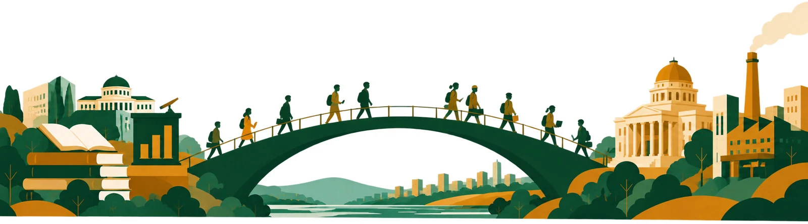
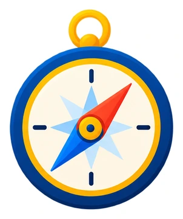
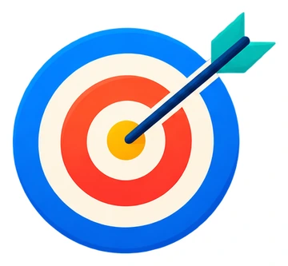
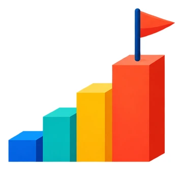
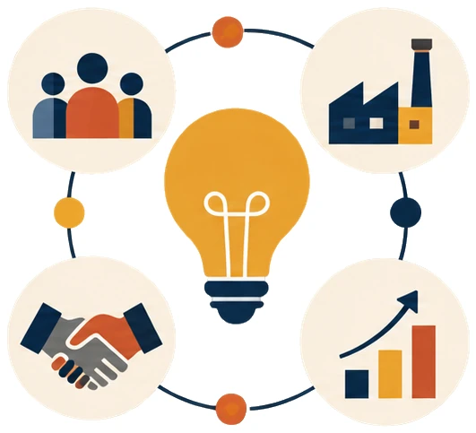

About Prayatna

What Prayatna is for
PPIC bridges research, policy and practice.
PPIC works at the intersection of economic development, social progress and environmental sustainability. It generates actionable policy insights, identify emerging development opportunities, strengthen innovation ecosystems, and facilitate partnerships that connect government, industry, academia, civil society and entrepreneurs.
By bridging research, policy and practice, Prayatna helps institutions and individuals make informed decisions, enables innovative solutions, and translates development priorities into meaningful outcomes for communities and economies.
Vision
To build an innovative, inclusive and sustainable society by connecting policy, enterprise and institutions to create lasting developmental progress.
Mission
To generate actionable policy knowledge, foster innovation and entrepreneurship, and facilitate cross-sector partnerships that address development challenges and unlock economic, social and environmental opportunities.
Our approach
Anticipate
Identify emerging policy challenges and opportunities.

Research
Generate evidence and actionable insights.

Design
Develop policy, innovation and development solutions.

Connect
Mobilise stakeholders and strategic partnerships.
Our values
Integrity
Upholding ethical standards and intellectual honesty in all our research and analysis.
Rigor
Applying sound research methods and evidence-based analysis to every challenge we address.

Independence
Encouraging objective inquiry and transparent reasoning across all our work.

Relevance
Addressing real-world policy and development challenges.
Collaboration
Valuing diverse perspectives and institutional partnerships.

Impact
Prioritising practical solutions and measurable progress.
What we want to see

Better-informed institutions
Stronger capacity to interpret evidence, assess policy choices, anticipate emerging challenges and identify development opportunities.

More dynamic innovation ecosystems
Better connections between entrepreneurs, industry, markets, and sources of expertise and support.

Stronger pathways from ideas to action
More effective institutional partnerships, coordinated initiatives, and practical solutions that can be implemented, scaled and assessed.
A future shaped by informed policy and purposeful innovation.
Prayatna works towards a society where institutions make better-informed decisions, entrepreneurship creates broader economic opportunities, and collaborative solutions advance social well-being and environmental sustainability.